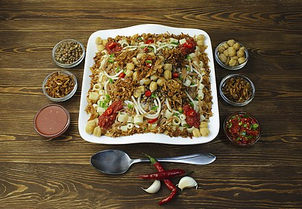

FELAFEL (ฟีราเฟล)
- ถั่วลูกไก่ 250 กรัม (สำหรับ 2-3 ที่)
- ยี่หร่าผง
- พริกคาเยนผง
- ผักชีลาว (Dill) หรือพาร์สลีย์สับละเอียด
- ไข่ไก่ 1 ฟอง
- แป้งสาลีอเนกประสงค์ ควรเลือกชนิดออร์แกนิก 1/2 ถ้วย
- เกลือป่น
- หอมแดงและกระเทียมสับ
- โยเกิร์ตรสธรรมชาติ 1 ถ้วย
- มายองเนส 3 ช้อนโต๊ะ
- น้ำมันพืช
- น้ำสะอาด

KOSHARY (กอสชารี่)
- ถั่วฝักยาว 1 ถ้วย
- เกลือ 1 ช้อนชา
- มักกะโรนีข้อศอก 1 ถ้วย
- ข้าว 1 ถ้วย
- ถั่วชิกพี 1 กระป๋อง (15 ออนซ์)
- 2 ช้อนโต๊ะน้ำมันมะกอก
- มะเขือเทศบดกระป๋อง 1 ถ้วย
- น้ำมันมะกอก 1/4 ถ้วย
- 2 cebollas
- 1 กานพลูกระเทียมหรือเพื่อลิ้มรส
SHAWARMA (ชาวารม่า)
- 250 กรัม โยเกิร์ตรสธรรมชาติ
- 100 กรัม ผงหมักรสชาวาร์มา(ตรา คัสตอม คูลินารี เชฟ โอน)
- 20 กรัม กระเทียมสับ
- 20 กรัม ขิงสับ
- 45 กรัม น้ำมันมะกอก
- 45 กรัม น้ำมะนาว
- 1 กก. เนื้อ เนื้อแกะ หรือไก่สไลด์บาง
- 10 แผ่น แผ่นแป้งพิต้า
- 400 กรัม ผักกาดแก้วสไลด์
- 150 กรัม หอมแดงสไลด์
- 150 กรัม มะเขือเทศสไลด์